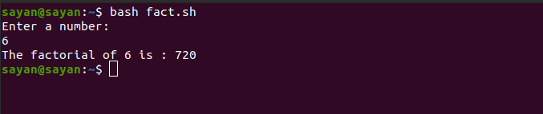

We know, formula for finding factorial of a number n is:
n! = 1 * 2 * 3 * 4 * 5 * ... * n
#!/bin/bash
fact=1
echo "Enter a number: "
read n
#if entered value is less than 0
if [ $n -lt 0 ]
then
echo "Invalid number"
exit
else
#logic for finding factorial
for((i=$n;i>=1;i--))
do
fact=`expr $fact \* $i`
done
fi
echo "The factorial of $n is : $fact"
If we save this file as fact.sh, then we will run it as: bash fact.sh
